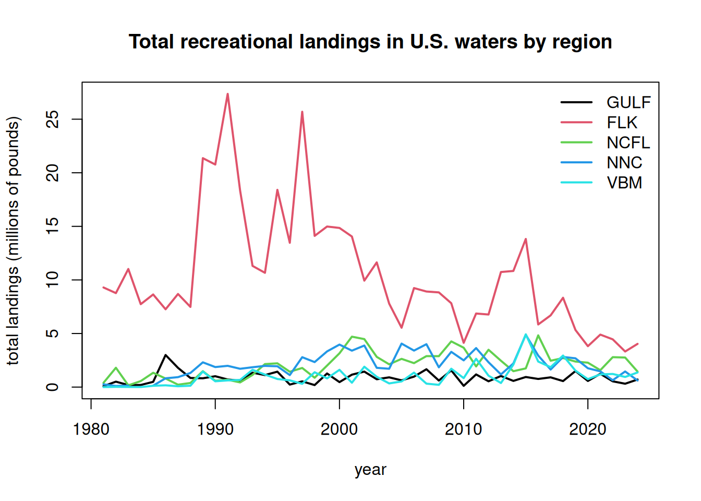
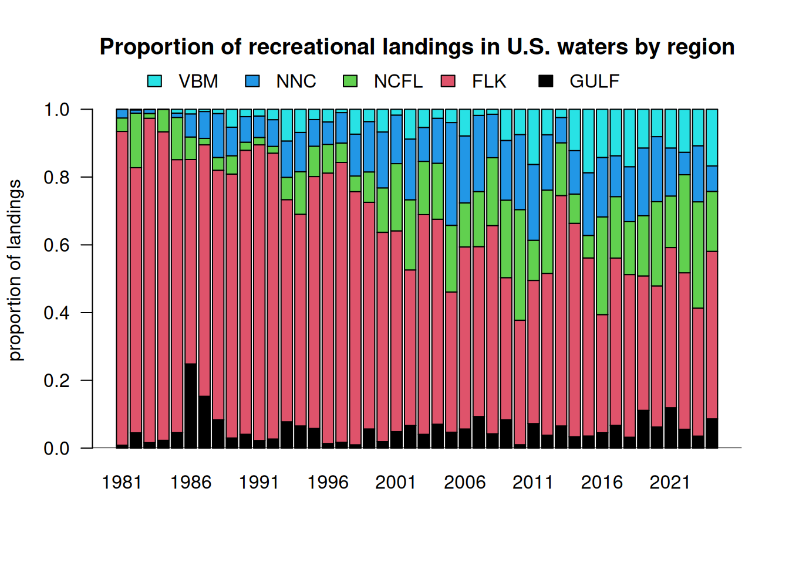
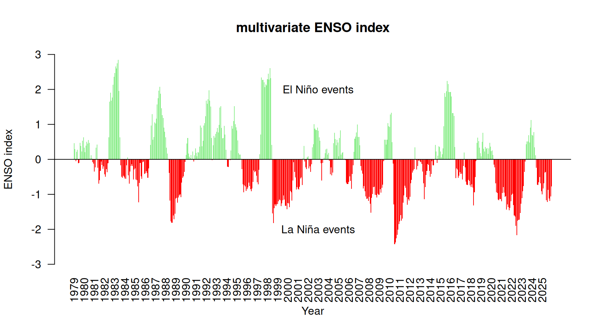
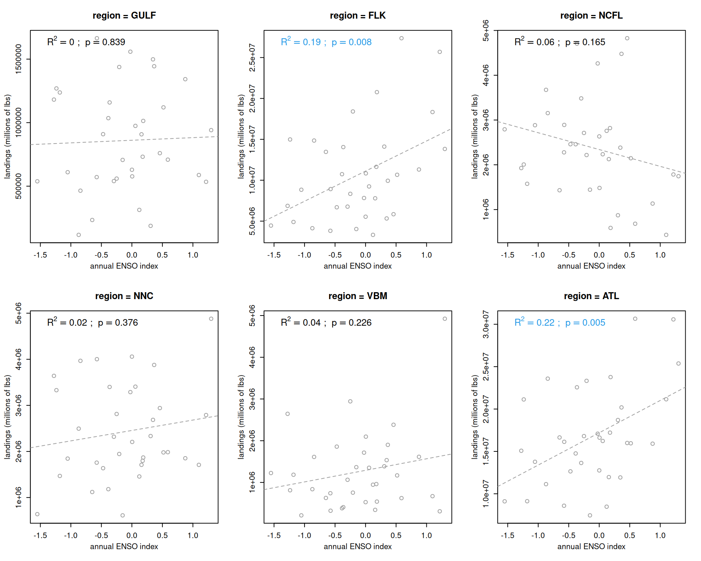
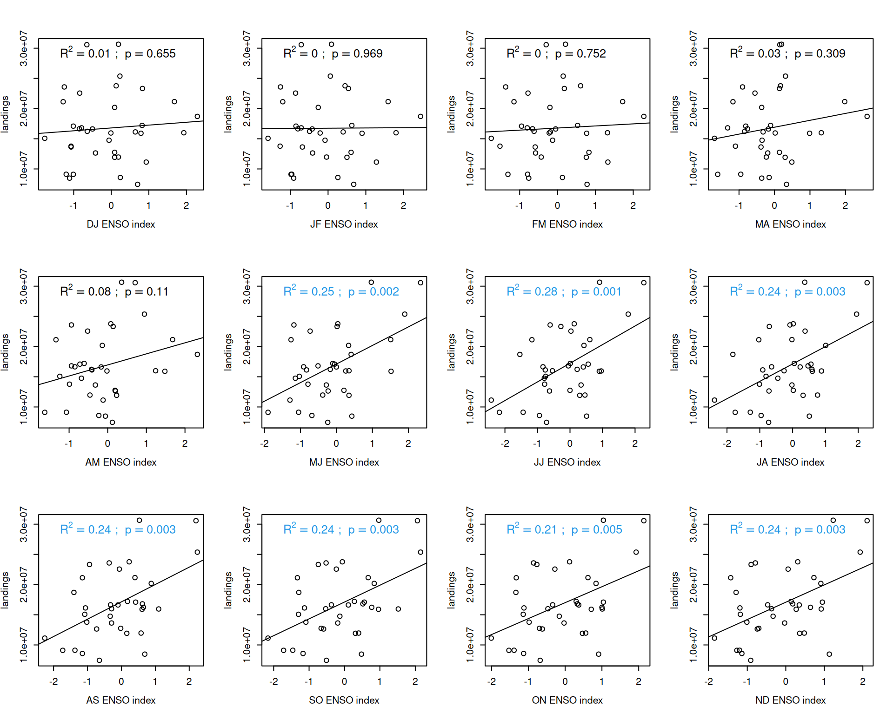
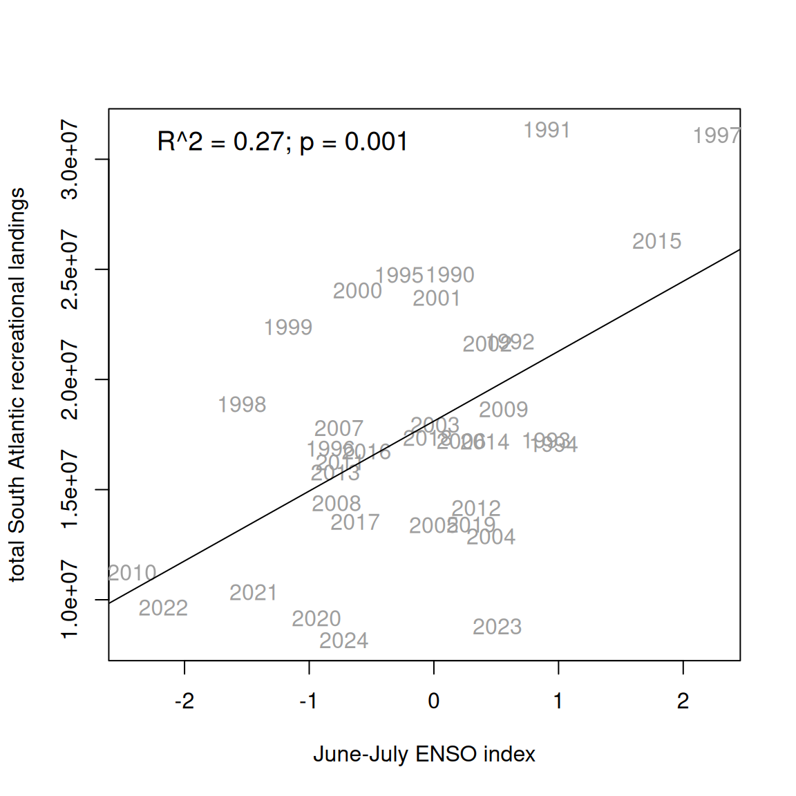

# clear workspace
rm(list = ls())
# install library
if(!require("readr")) install.packages("readr")
library(readr)
# read in data file
rec <- read.csv("data/recLandings.csv")
names(rec)[1] <- "Year"8 Predictive indices of dolphin abundance
Dolphin abundance in South Atlantic waters is driven by a combination of factors that are mostly outside of U.S. fishery management control, including environmental conditions and catch in international waters. In order to create a management procedure for the dolphin management strategy evaluation we need an index that can predict ahead of time whether the abundance of dolphin in U.S. waters is likely to be above or below average in a given year. Ideally this index can capture the dynamics early in the year or a season ahead in order to allow adequate time for management response. In the following sections we explore potential predictive indices of dolphin abundance.
8.1 Recreational landings as a proxy for availability
Because the recreational landings is generally unconstrained by management (the total quota is rarely reached and landings are on average well below the bag limits), the total recreational landings could serve as a proxy for dolphin availability in South Atlantic waters over time. We take the recreational data from Section 3 and summarize according to the areas specified by the management strategy evaluation: Florida Keys to Indian River County County (FLK), Brevard to Southern NC South of Hatteras (NCFL), Northern NC North of Hatteras to NC/VA border (NNC), and Virginia to Maine (VBM). We also include Gulf of America landings because dolphin are not managed in the Gulf region and thus the landings are not constrained by management and is most likely a function of availability.
8.2 Plot the recreational landings
Plotting the total recreational landings by region and the proportion of landings by region, we can observe that most of the landings in U.S. waters came from the FLK region, particularly in the earlier years. More recently, an increasing proportion of the landings has been coming from NCFL and further north, with FLK composing only about 50% of the landings. Gulf landings have historically been a small proportion of the total landings and have remained small throughout time. Landings in the VBM region were historically very small (~1%) but in recent years have varied between 10-18% of the landings.
# plot landings -------------------------------------------------
matplot(rec$Year, rec[2:6]/10^6, type = "l", lty = 1, lwd = 2, col = 1:5,
xlab = "year", ylab = "total landings (millions of pounds)",
main = "Total recreational landings in U.S. waters by region")
legend("topright", colnames(rec)[2:6], col = 1:5, lty = 1, lwd = 2, bty = "n")
# plot in terms of percentages ---------------------------------
rec1 <- rec[2:6]
rec1 <- as.matrix(rec1/rowSums(rec1, na.rm = T))
rec1[is.na(rec1)] <- 0
b <- barplot(t(rec1), col = 1:5, names.arg = rec$Year, las = 1, ylim = c(0, 1.05),
ylab = "proportion of landings",
main = "Proportion of recreational landings in U.S. waters by region",
legend.text = colnames(rec)[2:6], args.legend = list(x = 45, y = 1.15, horiz = T, bty = "n"))
abline(h=0)
# calculate total landings and South Atlantic landings for later analysis
rec$ATL <- rowSums(rec[3:6], na.rm = T)
rec$ALL <- rec$GULF + rec$ATL
# subset data from 1990 forward
rec <- rec[which(rec$Year >= 1990), ]Recreational monitoring was first established in 1979 and went through a number of changes in the 1980s, particularly related to monitoring of the for-hire fleet. We can see a very large jump in landings in the late 1980s that we suspect is related to some of these changes in methodology. For our data explorations we will use recreational data from 1990 forward as a reference period in which the monitoring was more standardized.
8.3 Potential influence of El Niño Southern Oscillation
We note that many large peaks in recreational landings have occurred in years where there were severe El Niño events (e.g., 1997-1998, 2015). We first explore the El Niño Southern Oscillation (ENSO) as a potential environmental predictor of dolphin abundace. An index based on El Niño is potentially attractive because there is some ability for seasonal predictions of El Niño (3-6 months ahead of time). As large-scale disruptors of atmospheric conditions across the globe, El Niño events have impacts on the distribution of temperatures in the Atlantic and could trigger changes in fish distributions.
We use the multivariate ENSO index from NOAA’s Physical Sciences Laboratory, which combines the influences of five different variables related to Pacific Ocean state into one index. The index is updated monthly and historical data can be downloaded directly from the site.
#download ENSO index
url <- "https://www.psl.noaa.gov/enso/mei/data/meiv2.data"
download.file(url = url, destfile = "data/enso.txt")
all_lines <- readLines("data/enso.txt")
footer_start <- grep("-999", all_lines)
e <- read.table("data/enso.txt", skip = 1, nrows = footer_start[1] - 2)
names(e) <- c("Year", "DJ", "JF", "FM", "MA", "AM", "MJ", "JJ", "JA", "AS", "SO", "ON", "ND")
ets <- as.vector(as.matrix(t(e[2:13])))
years <- sort(rep(e$Year, 12)) + rep((0:11)/12, length(min(e$Year):max(e$Year)))
barplot(ets, names.arg = floor(years), las = 2,
col = ifelse(ets >= 0, "lightgreen", "red"), border= NA, ylim = c(-3, 3),
main = "multivariate ENSO index", xlab = "Year", ylab = "ENSO index")
abline(h = 0)
text(346, 2, "El Niño events")
text(346, -2, "La Niña events")
Here is the raw time series, showing positive and negative anomalies in the ENSO state.
Now we will compare the ENSO index to the recreational landings. First we compare the annual average ENSO index to the landings from the different regions. We report adjusted R-squared values and p-values for linear regression of the ENSO index versus the landings; significant relationships are highlighted in blue.
# calculate mean
e$mean <- rowMeans(e[2:13], na.rm = T)
# merge years with recreational landings data
d <- merge(rec, e, by = "Year")
#head(d)
lis <- names(d)[2:7]
par(mfrow = c(2, 3), mex = 0.8, mgp = c(2.5, 1, 0))
for(i in 1:6) {
catch <- d[, which(names(d) == lis[i])]
plot(d$mean, catch, xlab = "annual ENSO index", ylab = "landings (millions of lbs)",
col = 8, main = paste0("region = ", lis[i]))
out <- lm(catch ~ d$mean)
abline(out, col = 8, lty = 2)
r2 <- summary(out)$r.squared
p_val <- summary(out)$coefficients[2, 4]
p_display <- ifelse(p_val < 0.001, "p < 0.001", paste("p =", round(p_val, 3)))
co <- 1
if (p_val < 0.01) { co <- 4 }
if (p_val < 0.001) { co <- 5 }
legend("topleft",
legend = bquote(R^2 == .(round(r2, 2)) ~ "; " ~ p == .(round(p_val, 3))),
bty = "n", cex = 1.2, text.col = co)
}
The ENSO index appears to be most closely related to the total recreational landings across the South Atlantic (driven primarily by landings in the FLK region). The relationship is highly significant and the ENSO index explains 19% of the variation in the total landings.
8.4 Seasonal influence of El Niño Southern Oscillation
Now we will consider the seasonal influence of ENSO, looking at correlations between the index during individual months and the landings. Since the strongest relationship occurs with the total South Atlantic landings, we will use these landings in the analysis.
lis <- names(e)[2:13]
par(mfrow = c(3, 4), mex = 0.8)
for(i in 1:12) {
ind <- d[, which(names(d) == lis[i])]
plot(ind, d$ATL/10^6, xlab = paste(lis[i], "ENSO index"), ylab = "landings (millions of lbs)", las = 1)
out <- lm(d$ATL/10^6 ~ ind)
abline(out)
r2 <- summary(out)$r.squared
p_val <- summary(out)$coefficients[2, 4]
p_display <- ifelse(p_val < 0.001, "p < 0.001", paste("p =", round(p_val, 3)))
co <- 1
if (p_val < 0.01) { co <- 4 }
if (p_val < 0.001) { co <- 5 }
legend("topleft",
legend = bquote(R^2 == .(round(r2, 2)) ~ "; " ~ p == .(round(p_val, 3))),
bty = "n", cex = 1.2, text.col = co)
}
A significant relationship between the monthly ENSO index and total South Atlantic recreational landings occurs with the May-June index, but the strongest relationship occurs in June-July (with 26% of the variance in landings explained by the index in that month). The relationship in the late summer and fall months are also significant, which is expected since the ENSO index is highly correlated from month to month.
We will test the June-July ENSO index in the management procedure as it has the strongest relationship.
par(mfrow = c(1, 1))
plot(d$JJ, d$ATL/10^6, xlab = "June-July ENSO index", ylab = "total U.S. Atlantic coast recreational landings", col = 0, las = 1)
text(d$JJ, d$ATL/10^6, d$Year, col = 8)
out <- lm(d$ATL/10^6 ~ d$JJ)
abline(out, col = 1)
p <- summary(out)$coef[2, 4]
legend("topleft", paste0("R^2 = ", round(summary(out)$adj.r.squared, 2), "; p = ",
round(p, 3)), cex = 1.2, bty = "n", text.col = 1)
summary(out)
Call:
lm(formula = d$ATL/10^6 ~ d$JJ)
Residuals:
Min 1Q Median 3Q Max
-10.332 -3.886 -0.054 2.320 10.606
Coefficients:
Estimate Std. Error t value Pr(>|t|)
(Intercept) 17.2374 0.8641 19.949 < 2e-16 ***
d$JJ 3.0873 0.8680 3.557 0.00116 **
---
Signif. codes: 0 '***' 0.001 '**' 0.01 '*' 0.05 '.' 0.1 ' ' 1
Residual standard error: 5.046 on 33 degrees of freedom
Multiple R-squared: 0.2771, Adjusted R-squared: 0.2552
F-statistic: 12.65 on 1 and 33 DF, p-value: 0.001161# save the index to the indices file
ind <- data.frame(cbind(d$Year, d$JJ))
write.csv(ind, file = "indices/enso_index.csv", row.names = F)